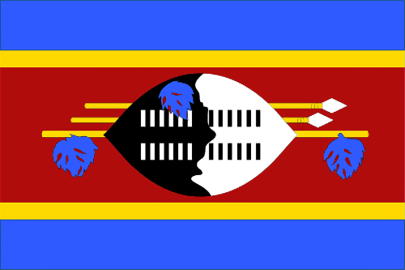
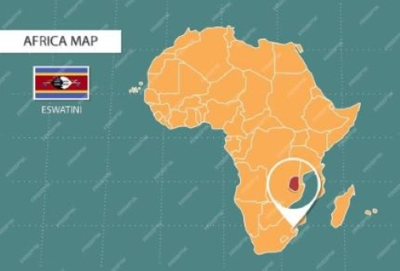
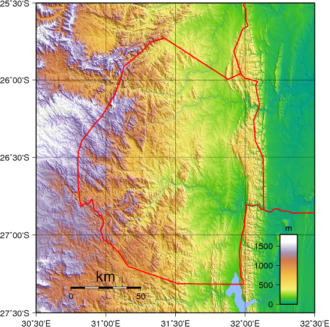
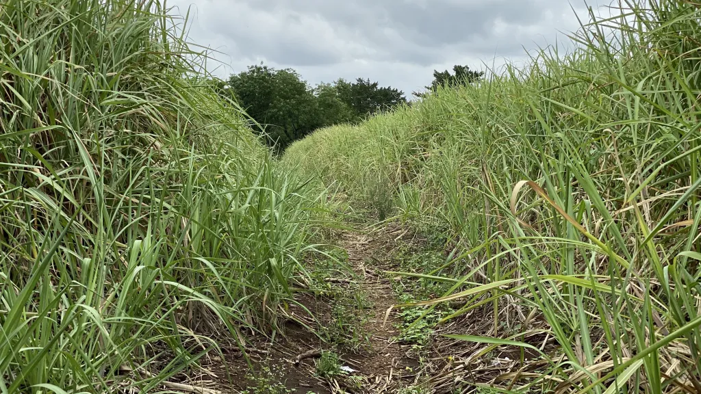
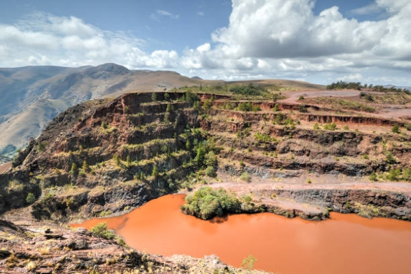
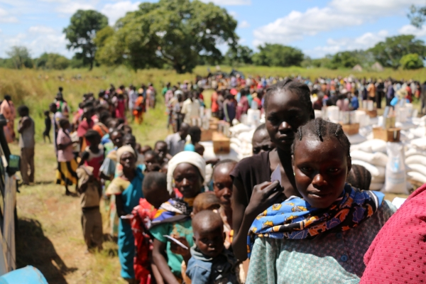
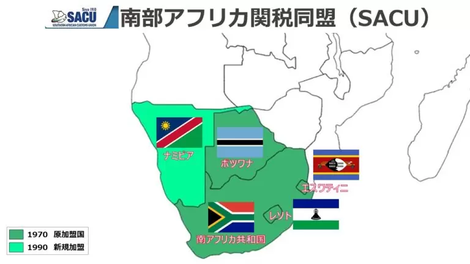
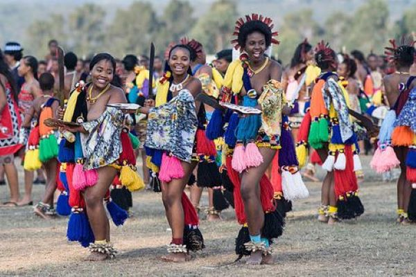
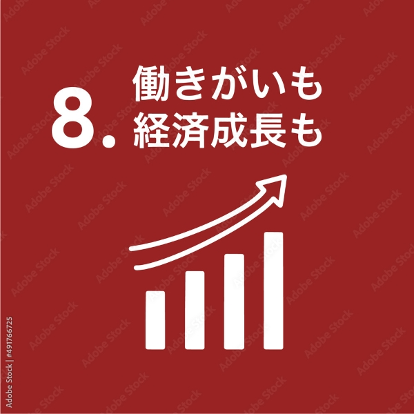

【エスワティニ】

１.位置や分布
・アフリカ大陸南部に位置している。
・南アフリカとモザンビークに囲まれた内陸国である。

２.場所（気候、地形について）
・西部は標高1500mの森林に覆われた草原、東部は草原地帯である。
・モンスーンの影響を受けるため、温帯のステップ気候である。
・また、雨期が１年に２回訪れる珍しい気候である。

３.人間と自然環境との相互依存関係
・植生が豊かなことから、観光客が多く訪れる。

・以前はヌグウェニャ鉱山があり発展していたが枯渇し、現在は石炭生産程度である。

４.空間的相互依存作用
・以前はモザンビークからアフリカ人入植者とアフリカ大陸の難民を受け入れていた。

・南アフリカを中心に周辺諸国と南部アフリカ関税同盟を結んでいる。
・南アフリカの企業が多く進出しており、輸出入の約８割を占めている。

５.地域
・一夫多妻制が認められている。
・祭りや伝統衣装などの古い文化習慣が残っており、毎年８月～９月にかけて「リード・ダンス」と呼ばれる祭りが行われる。

６.SDGs
「８ 働きがいも経済成長も」
・経済成長を促進し、雇用を創出するための中心的な課題である。国連や他の国際機関との協力により、技術的、財政的支援を受けている。
